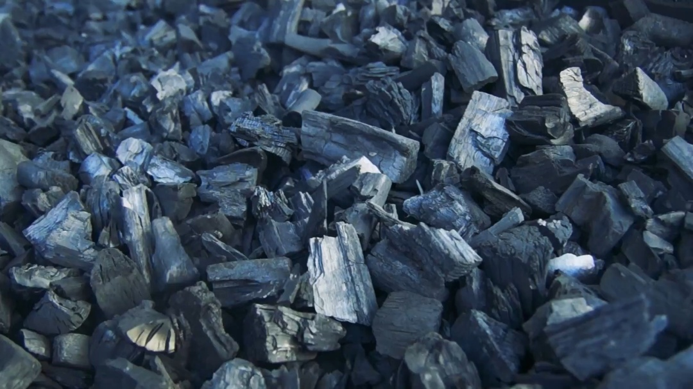

L’usine de bois et de produits chimiques de Perechyn est le plus grand producteur ukrainien du charbon de bois et un des leaders européens avec plus de cent ans d'histoire de production.
Respect de l'environnement, réputation irréprochable, innovation et amélioration continue sont les principes et la mission principaux de la société.
En Europe, on a déjà évalué la qualité des produits du charbon de bois, la capacité des entrepreneurs ukrainiens de soutenir les normes de production européennes et leur volonté d'évoluer en appliquant de nouvelles technologies.
Les clients de l'usine comprennent les plus grands producteurs européens de charbon activé Cabot Norit Nederland BV, AdFiS Products GmbH , le leader mondial de la production de silicium RW Silicium GmbH, les fabricants de métaux Wieland-Werke AG, Montanwerke Brixlegg AG.
Les produits de l’usine de bois et de produits chimiques de Perechyn sont toujours présents sur les étalages des célèbres détaillants européens: LIDL, Kaufland , Carrefour , EDEKA, TESCO. Toute entreprise industrielle d'Ukraine peut envier l’homologation de l'usine qui fonctionne selon les normes BSCI, PEFC, ISO.
AVANTAGES DE LA PRODUCTION INDUSTRIELLE DE L’USINE
La production en deux cornues verticales est entièrement automatisée et contrôlée:
- Toute la matière organique résultant de la pyrolyse n'entre pas dans l'atmosphère mais est brûlée dans la chaudière en générant ainsi de la vapeur qui est ensuite utilisée comme source d'énergie pour la production de briquettes, d'acétate d'éthyle et d'autres besoins internes de l'usine.
- La matière première est d'origine légale: elle est obtenue par des achats officiels de déchets des exploitations forestières publiques.
- La teneur en matières volatiles, cendres, humidité est constamment surveillée et, surtout, le processus permet d'atteindre la teneur en carbone non volatil jusqu'à 93%.
L’usine fonctionne selon les normes ISO 9001:2015, ce qui est assure par une parfaite gestion du système qualité. BSCI garantit les conditions sociales les plus élevées. Et surtout, la société est fière d'être la première en Ukraine à recevoir le certificat PEFC, une reconnaissance européenne pour la gestion durable des forêts.
En Ukraine, les produits de l'usine sont vendus sous TM Grilly, qui occupe en toute confiance le segment haut de gamme et est un choix convivial pour les produits respectueux de l'environnement. Son utilisation est le signe d'une attitude consciente envers vous-même, votre milieu et l'environnement. Le charbon de qualité n'est pas une question à propos du prix, c'est plutôt la question de santé et de sécurité personnelle.
ORIENTATIONS DE DÉVELOPPEMENT ET PERSPECTIVES DE PRODUCTION MODERNE
En 2020, la société se fixe des objectifs élevés. Dans l’avenir proche il s’agira des produits de transformation profonde du bois (production de charbon actif), des fluides de pyrolyse et allumettes, une coopération avec les producteurs de métaux.
La quantité de CO2 émise dans l'atmosphère lors de l'usinage des métaux à l'aide de coke provoque une catastrophe écologique croissante: il n’est pas étonnant que l'ONU ait déclaré un niveau de danger extrême dans le monde pour cette raison même. Par conséquent, des producteurs de métaux bien connus, pour la plupart des leaders mondiaux, nous demandent de charbon de bois comme substitut du coke.
L'utilisation de charbon produit d'une manière respectueuse de l'environnement garantit la conservation de la santé et de l'environnement à l'échelle mondiale.
C’est pour cette raison que l'usine promeut activement ses méthodes de travail et fournit de grands volumes de matières premières pour les besoins quotidiens et pour l'industrie en Ukraine et en Europe.
EXPÉRIENCE ET RÉPUTATION IRRÉPROCHABLE
L’usine de bois et de produits chimiques de Perechyn occupe une position de leader dans la production européenne respectueuse de l’environnement de charbon de bois. À la fin de 2019, la production mensuelle atteint 4000 tonnes de charbon de bois. La matière brute est 100% bois massif ukrainien.
Plus de 100 ans d'expérience dans la production industrielle de charbon de bois et de briquettes, absence d'émissions nocives dans l'atmosphère et les eaux usées, diversification des ressources énergétiques, contrôle minutieux de la qualité des produits à toutes les étapes de la production, transparence de la chaîne d'approvisionnement des matières premières et responsabilité sociale: tous ces avantages nous ouvrent de nouvelles perspectives pour le développement dans le context actuel et nous redonnent confiance dans l'avenir.